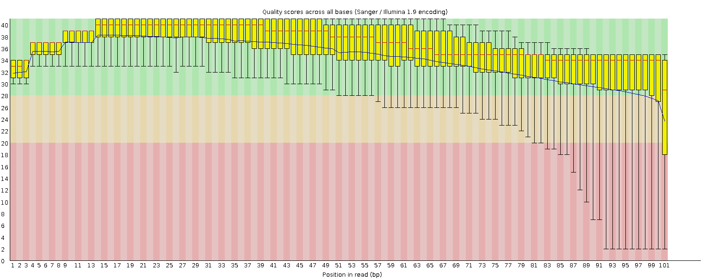
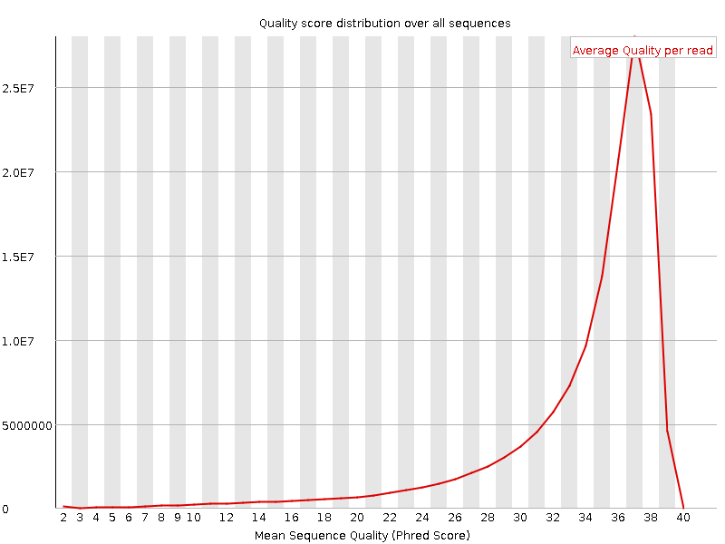
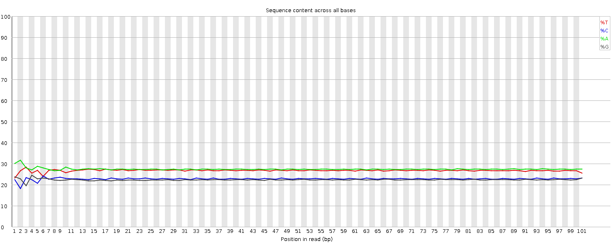
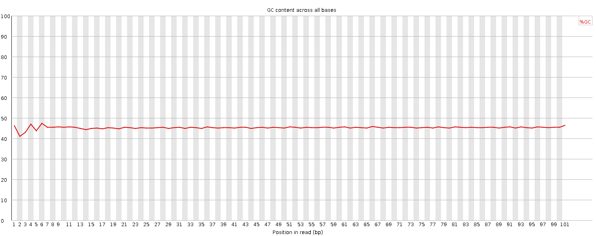
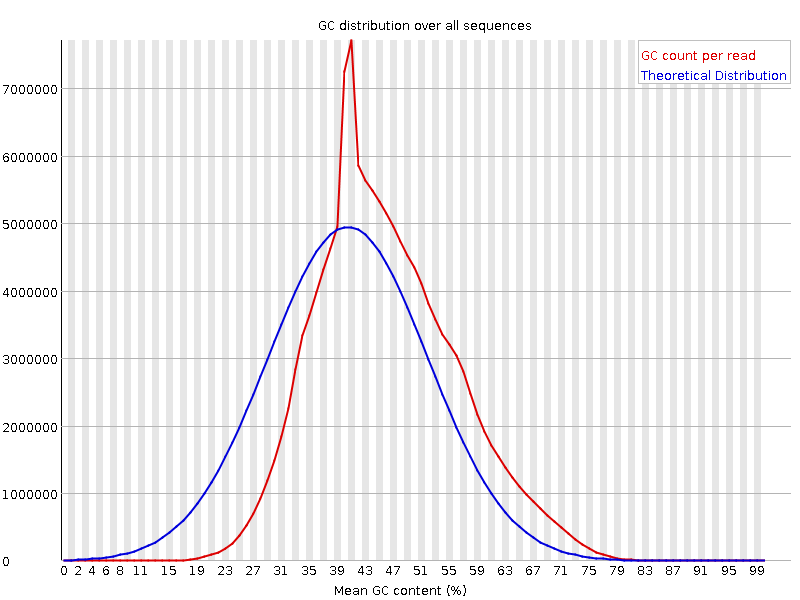
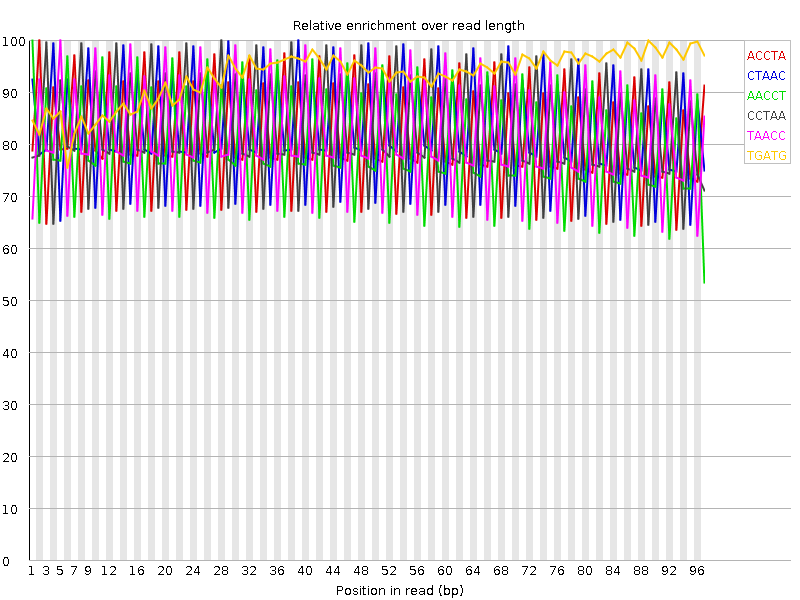

![[OK]](Icons/tick.png) Basic Statistics
Basic Statistics
| Measure | Value |
|---|---|
| Filename | 120406_0171_AD0T2DACXX_1_SA-PE-041_2.sanfastq.gz |
| File type | Conventional base calls |
| Encoding | Sanger / Illumina 1.9 |
| Total Sequences | 142236890 |
| Filtered Sequences | 0 |
| Sequence length | 101 |
| %GC | 45 |
Per base sequence quality

Per sequence quality scores

![[WARN]](Icons/warning.png) Per base sequence content
Per base sequence content

Per base GC content

![[FAIL]](Icons/error.png) Per sequence GC content
Per sequence GC content

Per base N content

Sequence Length Distribution

Sequence Duplication Levels

Overrepresented sequences
| Sequence | Count | Percentage | Possible Source |
|---|---|---|---|
| AACCTAACCTAACCTAACCTAACCTAACCTAACCTAACCTAACCTAACCT | 904089 | 0.6356220246379121 | No Hit |
| CTAACCTAACCTAACCTAACCTAACCTAACCTAACCTAACCTAACCTAAC | 841004 | 0.5912699581662676 | No Hit |
| CCTAACCTAACCTAACCTAACCTAACCTAACCTAACCTAACCTAACCTAA | 693910 | 0.487855154875785 | No Hit |
| ACCTAACCTAACCTAACCTAACCTAACCTAACCTAACCTAACCTAACCTA | 690171 | 0.48522644160737766 | No Hit |
| TAACCTAACCTAACCTAACCTAACCTAACCTAACCTAACCTAACCTAACC | 580308 | 0.40798698565470604 | No Hit |
| GGTTAGGTTAGGTTAGGTTAGGTTAGGTTAGGTTAGGTTAGGTTAGGTTA | 535962 | 0.3768094198347559 | No Hit |
| GTTAGGTTAGGTTAGGTTAGGTTAGGTTAGGTTAGGTTAGGTTAGGTTAG | 479448 | 0.33707711128948337 | No Hit |
| TAGGTTAGGTTAGGTTAGGTTAGGTTAGGTTAGGTTAGGTTAGGTTAGGT | 428803 | 0.3014710178210449 | No Hit |
| AGGTTAGGTTAGGTTAGGTTAGGTTAGGTTAGGTTAGGTTAGGTTAGGTT | 386788 | 0.2719322673604576 | No Hit |
| TTAGGTTAGGTTAGGTTAGGTTAGGTTAGGTTAGGTTAGGTTAGGTTAGG | 346823 | 0.2438347745089196 | No Hit |
Kmer Content

| Sequence | Count | Obs/Exp Overall | Obs/Exp Max | Max Obs/Exp Position |
|---|---|---|---|---|
| ACCTA | 86390245 | 5.7897544 | 7.111614 | 2 |
| CTAAC | 85880830 | 5.7556143 | 6.9334655 | 39 |
| AACCT | 83631240 | 5.60485 | 7.028545 | 1 |
| CCTAA | 82615285 | 5.5367618 | 6.72796 | 28 |
| TAACC | 82127090 | 5.504044 | 6.741313 | 5 |
| TGATG | 61368675 | 4.388066 | 4.7001 | 89 |
| TCATC | 62102455 | 4.275426 | 5.3242664 | 68 |
| CATCA | 63122245 | 4.2303653 | 5.1255198 | 81 |
| GATGA | 60187605 | 4.1894617 | 4.7174964 | 85 |
| GTTAG | 57961835 | 4.144465 | 5.5561323 | 2 |
| TAGGT | 57246575 | 4.0933213 | 5.4351444 | 9 |
| TTAGG | 54905170 | 3.9259033 | 5.18741 | 3 |
| AGGTT | 54644795 | 3.907286 | 5.251122 | 10 |
| GGTTA | 53699980 | 3.8397284 | 5.117022 | 1 |
| ATCAT | 57890650 | 3.3124785 | 4.0077357 | 79 |
| ATGAT | 55179585 | 3.2177396 | 3.5132196 | 94 |